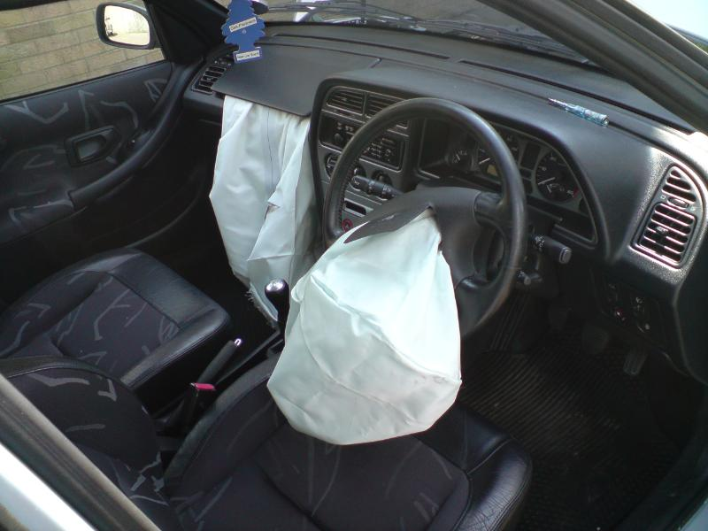
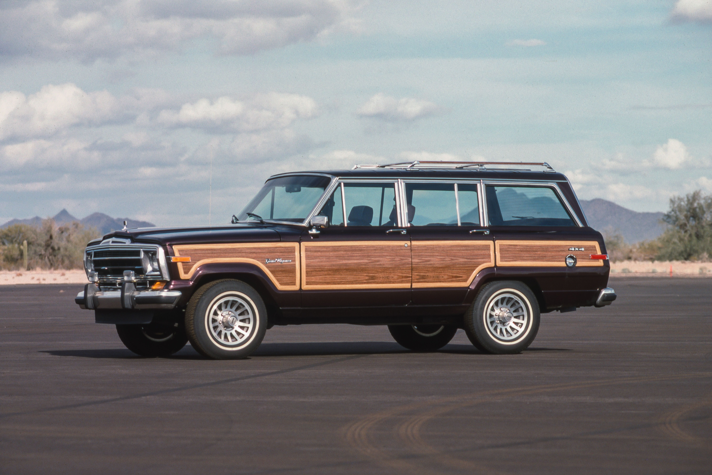
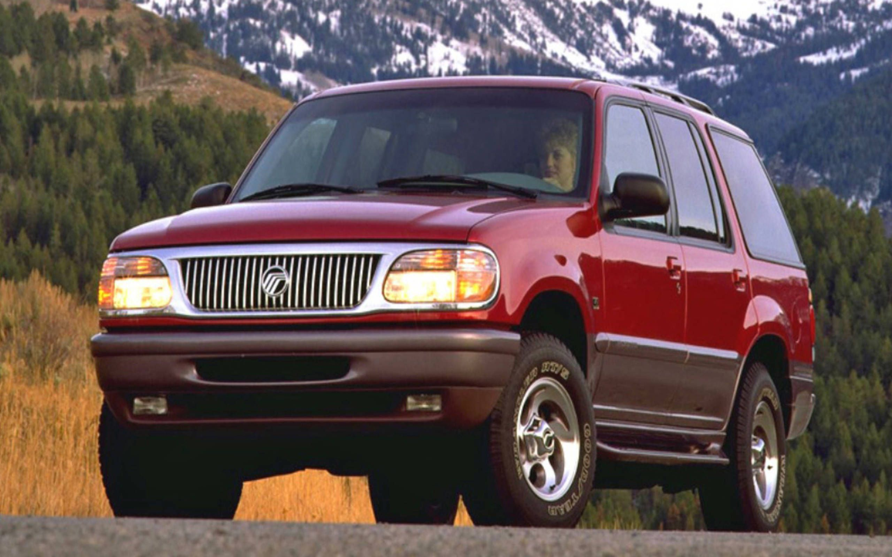

The 1990s marked a turning point. With the Cold War over, America entered a decade of global integration and digital innovation. While fuel economy and emissions were growing concerns, consumer tastes leaned toward size and status — making the SUV a cultural icon.
Tech Breakthroughs of the 1990s
The 1990s brought major technological upgrades in everyday vehicles. Cars became smarter and safer, setting the stage for modern driving experiences.
GPS navigation became available in high-end vehicles by the mid-1990s.
Airbags became standard in front seats by 1998 in the U.S.
CD players replaced cassettes as the default media system.
Early GPS device for cars

Airbags become a safety standardCD players replace cassettes in dashboards
Economy and Globalization
During the 1990s, American automakers expanded globally but faced tough competition from Japanese and European brands. SUVs rose as the new symbol of status and comfort, replacing the traditional family sedan.
Agreements like NAFTA (North American Free Trade Agreement) reshaped production: vehicles were now built across borders, with parts coming from the U.S., Mexico, and Canada.

1990s SUV on American road
Roads & Urbanization
As suburban sprawl intensified, so did car dependency. Longer commutes and increasing traffic congestion became everyday challenges.
Public transportation systems were often overlooked in rapidly expanding metropolitan areas, deepening the reliance on personal vehicles.
American Families and Car Culture
By the 1990s, it was common for a household to own two cars. Vehicle choices became personal — families gravitated toward minivans, while SUVs became symbols of independence and ruggedness.
Ads and media reinforced these identities, with cars becoming reflections of lifestyle rather than just tools of transport.

1990s Family SUV
Environmental Awareness Grows
Environmental consciousness grew during this era, with global warming entering public debate. Yet American vehicles largely stayed fuel-heavy.
In 1997, Toyota introduced the Prius — the world’s first mass-produced hybrid car — a groundbreaking step, though electric vehicles remained a niche concept.